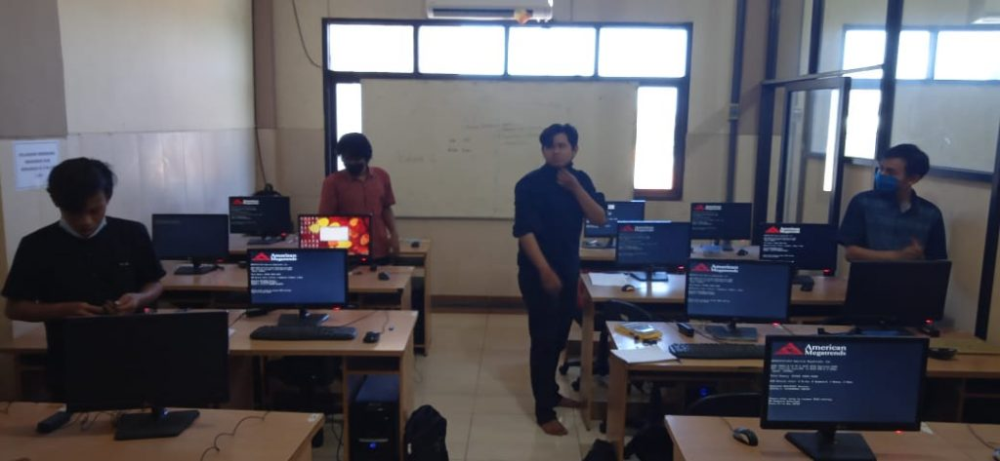
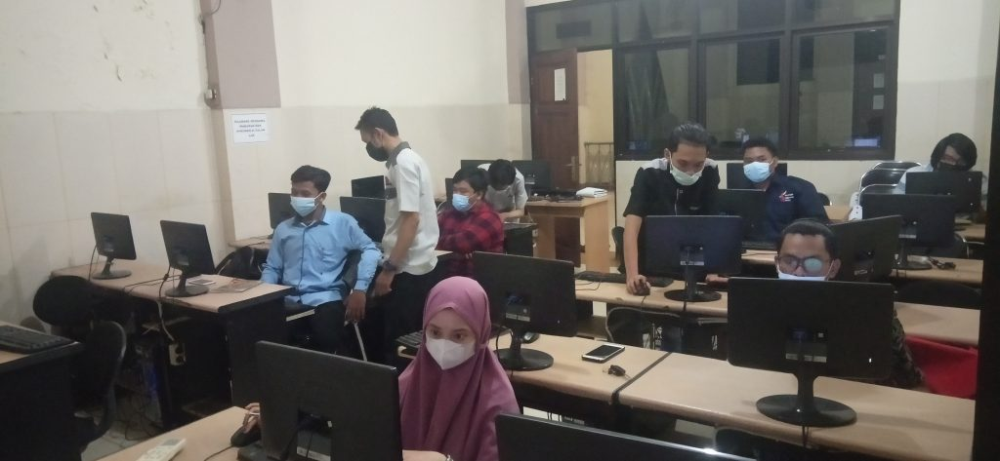
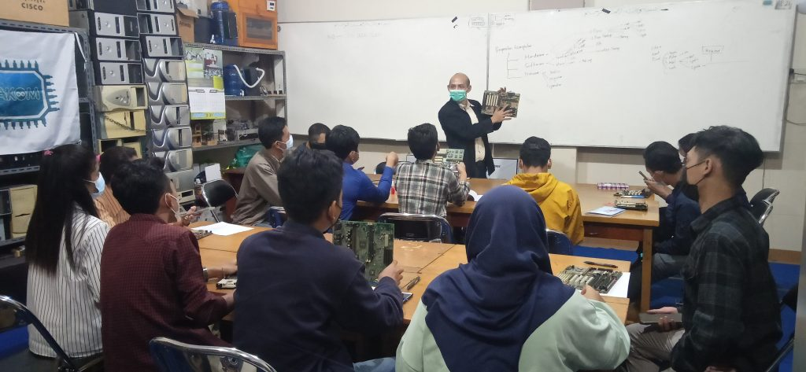
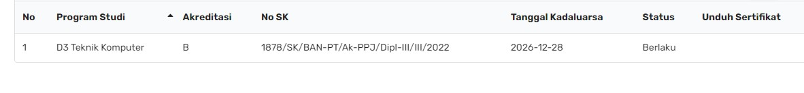

VISI
| Menjadi pusat pendidikan, dan pengembangan vokasi bidang komputer yang menghasilkan ahli madya berdaya saing global |
MISI
| Untuk mencapai Visi tersebut, maka Prodi D3 Teknik Komputer UMAHA menyusun Misi sebagai berikut : 1. Menyelenggarakan program pendidikan D3 Teknik Komputer yang berkualitas yang dapat diakui di dunia industri. 2. Menyelenggarakan penelitian yang dapat memberikan kontribusi pada perkembangan Teknologi Informasi. 3. Menyelenggarakan kegiatan pengabdian masyarakat yang bermanfaat bagi kesejahteraan masyarakat. 4. Meningkatkan kerjasama yang baik dalam bidang dunia Komputer agar tercipta link and match secara berkesinambungan. |
TUJUAN
| Sedangkan yang menjadi tujuan Prodi Diploma 3 Teknik Komputer UMAHA adalah sebagai berikut : 1. Menghasilkan lulusan yang kreatif dan inovatif dengan mengikuti perkembangan teknologi. 2. Menghasilkan lulusan Ahli Madya Komputer yang dapat bersaing di dunia teknologi Informasi dengan gelar A.Md.Kom. 3. Menghasilkan lulusan yang mampu membangun dan menjalin kerjasama dengan berbagai pihak yang terkait dalam bidang komputer, sistem kontrol, otomatisasi industri. 4. Menghasilkan lulusan yang mampu memberikan manfaat dalam kegiatan yang bersentuhan dengan masyarakat. |
LABORATORIUM



AKREDITASI
